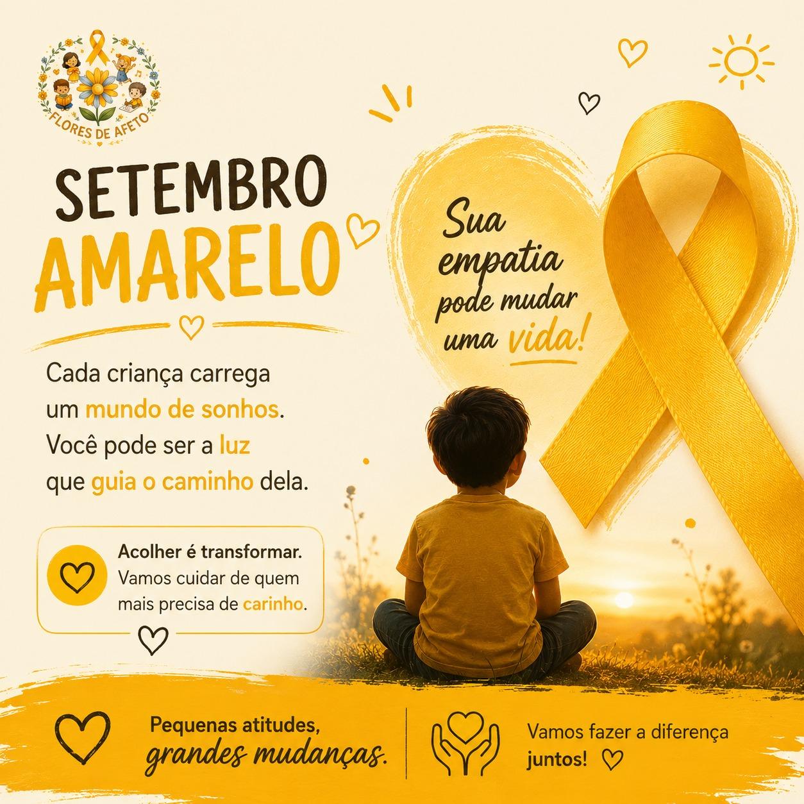
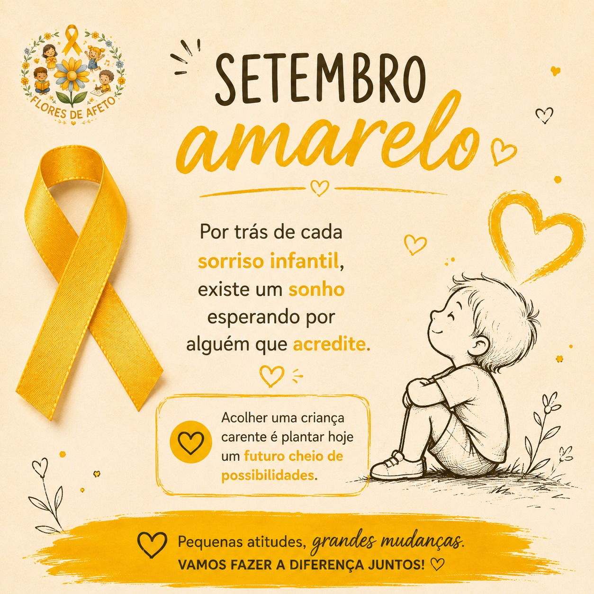

Vídeo de Apresentação da ONG
Em desenvolvimento....
Leia mais →Todas as doações vão direto para os projetos


O Flores de Afeto é um projeto social criado com a missão de transformar vidas por meio da solidariedade, do cuidado e do amor ao próximo. Acreditamos que pequenos gestos têm o poder de gerar grandes mudanças e fortalecer a esperança de crianças, adolescentes em situação de vulnerabilidade.
Levar acolhimento, esperança e oportunidades para crianças em situação de vulnerabilidade por meio de ações solidárias, educativas e recreativas, promovendo impacto social positivo através do trabalho voluntário.
Ser reconhecida como uma iniciativa estudantil capaz de inspirar outras pessoas a praticarem a solidariedade, tornando-se referência em projetos sociais desenvolvidos por jovens aprendizes.
Empatia, Solidariedade, Respeito, Transparência, Responsabilidade Social, Trabalho em Equipe, Ética, Compromisso e Amor ao próximo
Em desenvolvimento....
Leia mais →Valorizar a importância da educação e incentivar crianças e adolescentes em situação de acolhimento institucional a persistirem nos estudos, por meio de relatos inspiradores dos voluntários.
Leia mais →Criar um espaço digital para divulgar a ONG, suas ações, projetos e parcerias de forma organizada, clara e acessível, além de disponibilizar conteúdos de conscientização sobre temas relacionados à causa.
Leia mais →Promover um momento de diversão, acolhimento e interação, proporcionando às crianças uma experiência especial no Dia das Crianças por meio de brincadeiras, teatro e doações.
Leia mais →Em Breve...
Leia mais →Em Breve...
Leia mais →Entre em contato para saber mais sobre os projetos, voluntariado e formas de apoiar a organização com parcerias.
A Associação Beneficente Vó Flor, criada pela notável Florenice Gomes Macedo, carinhosamente conhecida por Vó Flor, é uma instituição de grande importância para toda a Salvador. Ao longo de sua existência, ela se empenhou incansavelmente no cuidado das crianças desfavorecidas, preenchendo lacunas deixadas pela ausência de apoio governamental. Sua localização na Rua Lelis piedade, N°20, na Ribeira, abriga 58 crianças, fornecendo não apenas todas refeições diárias para estas crianças e a pessoas em situação de rua, também contamos com suporte educacional, aulas de capoeira, judô e balé. Além de ajudarmos 40 idoso carentes com cestas básicas mensalmente. A relevância deste trabalho é imensurável, não apenas por suprir necessidades básicas, mas por oferecer oportunidades de desenvolvimento integral a crianças em situação de vulnerabilidade.